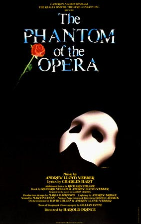
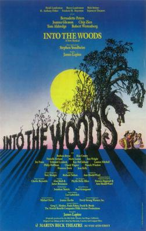
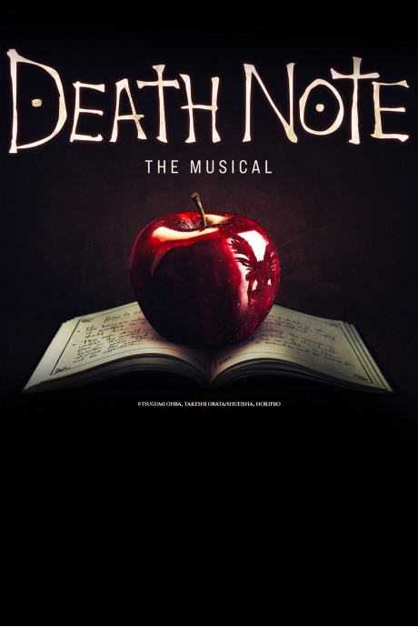
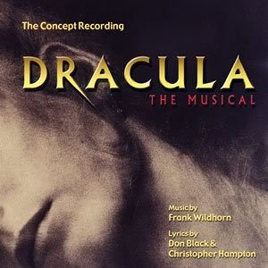
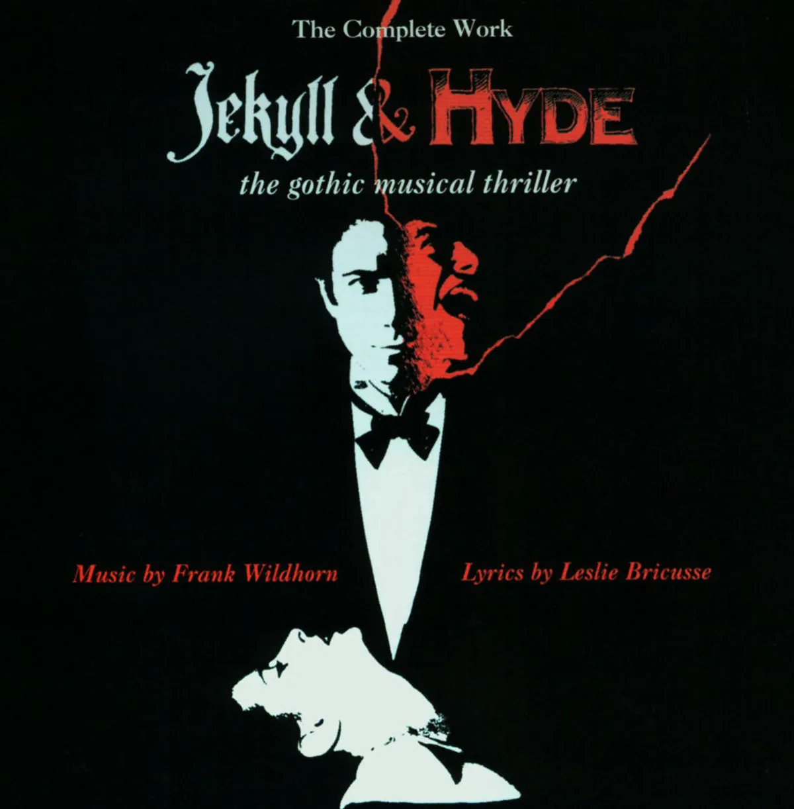
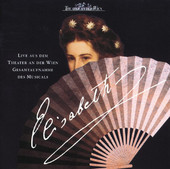
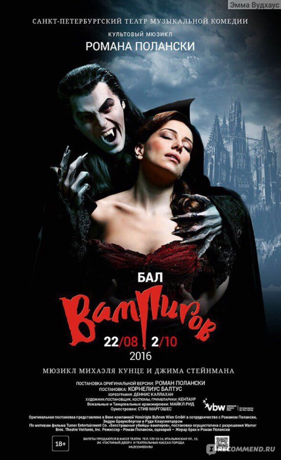
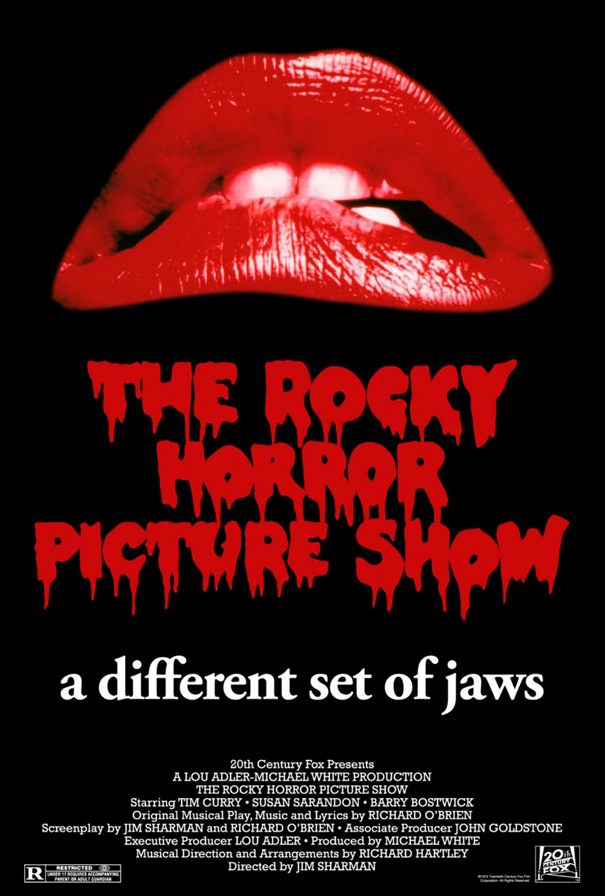

Welcome to HADESTOWN, where a song can change your fate. This acclaimed musical by singer-songwriter Anaïs Mitchell and director Rachel Chavkin is winner of 8 Tony Awards including Best Musical and the Grammy Award® for Best Musical Theater Album. It intertwines two mythic tales — that of young dreamers Orpheus and Eurydice, and that of King Hades and Queen Persephone — as it invites you on an unforgettable journey to the underworld and back. Performed by a vibrant ensemble of actors, singers, dancers, and musicians, HADESTOWN asks audiences to imagine how the world could be.
01.10 |
15:00 19:00 |
15.10 |
15:00 19:00 |

Phantom of the Opera is widely considered one of the world’s most beautiful and spectacular musicals. Since 1986, it has played to over 160 million people in 217 cities, 52 territories and 23 languages, Phantom is a global phenomenon! With a romantic, haunting and iconic musical score including The Phantom of the Opera, The Music of the Night and All I Ask of You, Phantom has captured the hearts and imagination of global audiences for almost 40 years.
02.10 |
15:00 19:00 |
16.10 |
15:00 19:00 |

That's what Little Red, a Witch, Cinderella, the Baker, and his wife discover as they invade one another's stories and find themselves tangled in a web of unexpected consequences. They quickly find this web is too big to untangle on their own and that they must work together to set everything right in the kingdom. Into the Woods reminds us that only together can we defeat the wolves and giants of the world. With a stunning, unforgettable score featuring "No One is Alone," "Children Will Listen," and "Giants in the Sky," this iconic show will enchant, entrance, and delight!
03.10 |
15:00 19:00 |
17.10 |
15:00 19:00 |

Death Note: The Musical is a stage production based on the Death Note manga series. The music was composed by Frank Wildhorn with lyrics by Jack Murphy and script by Ivan Menchell.
04.10 |
15:00 19:00 |
18.10 |
15:00 19:00 |

Dracula The Musical is a thrilling drama of suspense and a Gothic romance of dreamlike temptation from the extraordinary team of Christopher Hampton, Don Black and Frank Wildhorn (Jekyll & Hyde, The Civil War).
Set in Europe at the end of the Victorian Age, the story follows the famed vampire as he lusts for new blood. Jonathan Harker and Mina Murray fall victim to Dracula's unnatural charm and, along with Doctor Van Helsing, must fight Dracula's supernatural powers.
05.10 |
15:00 19:00 |
19.10 |
15:00 19:00 |

Jekyll & Hyde is a 1990 musical based on the 1886 novella The Strange Case of Dr Jekyll and Mr Hyde by Robert Louis Stevenson. Originally conceived for the stage by Frank Wildhorn and Steve Cuden, it features music by Frank Wildhorn, a book by Leslie Bricusse and lyrics by all of them. After a world premiere run in Houston, Texas, the musical embarked on a national tour of the United States prior to its Broadway debut in 1997.
06.10 |
15:00 19:00 |
20.10 |
15:00 19:00 |

Elisabeth is a Viennese musical commissioned by the Vereinigte Bühnen Wien and originally produced in German, with a book and lyrics by Michael Kunze and music by Sylvester Levay. It portrays the life and death of Empress Elisabeth of Austria, also known as "Sisi", the wife of Emperor Franz Joseph I, from her engagement and marriage in 1854 to her murder in 1898 at the hands of the Italian anarchist Luigi Lucheni; it focuses on her growing obsession with death, as her marriage and the empire crumble around her just before the turn of the 20th century.
07.10 |
15:00 19:00 |
21.10 |
15:00 19:00 |

Dance of the Vampires is a musical adaptation of the 1967 Roman Polanski film (known as The Fearless Vampire Killers in the United States). Polanski also directed the musical’s original German-language production (titled Tanz der Vampire). The music was composed by Jim Steinman, orchestrated by Steve Margoshes, and Michael Kunze wrote the original German book and lyrics.
08.10 |
15:00 19:00 |
22.10 |
15:00 19:00 |

The Rocky Horror Picture Show, musical comedy-horror film released in 1975 that has gained a cult following. It was directed by Jim Sharman and written by Sharman and Richard O’Brien. The film, and the stage musical on which it is based, is a tribute to B-movies of the 1930s–60s in the horror and science fiction genres. The Rocky Horror Picture Show came out of the 1960s counterculture in the United States, Canada, and western Europe, and it was one of the first musicals to include characters who had fluid gender identities. It is remarkable for the level of worship and obsession it inspires in fans, who create an immersive environment at screenings. As of 2025, it has continued to have limited screenings and may be considered one of the longest-running theatrical releases in film history.
31.10 |
20:00 23:00 |
01.11 |
0:00 |